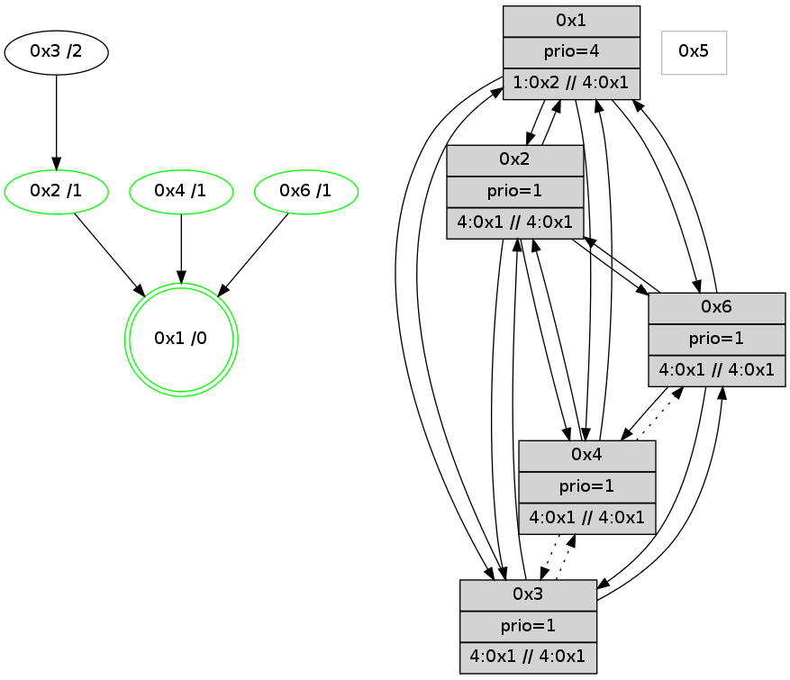

>> << IDX [start] -100 -25 -5 +0 +5 +25 +100 [800.317502975]
 Previous packets
----------------------------------------------------------------------
795.396423 beacon01(adaf) #0 coord=01,02,05,03,04,06 cycle=432.0ms assoc
-- color-indic=1 64 18 59
795.406385 beacon02(adaf) #0 coord=01,02,05,03,04,06 cycle=432.0ms assoc 64 49 a6
795.416384 beacon05(adaf) #0 coord=01,02,05,03,04,06 cycle=432.0ms assoc 64 ef 8c
795.426384 beacon03(adaf) #0 coord=01,02,05,03,04,06 cycle=432.0ms assoc 64 73 a8
795.436384 beacon04(adaf) #0 coord=01,02,05,03,04,06 cycle=432.0ms assoc 64 d5 82
795.446384 beacon06(adaf) #0 coord=01,02,05,03,04,06 cycle=432.0ms assoc 64 a1 9e
795.458106 [Hello(6): seq=512 sym=3,1,2 sysInfo=hasWarning,coloring-mode-on,ColoringModeIndicationCalled stat=3:1,6,11,1/1:12,5,3,1/2:2,2,5,2]
795.460639 [Hello(4): seq=599 sym=6,1 asym=2 sysInfo=hasWarning,coloring-mode-on,ColoringModeIndicationCalled stat=6:12,0,8,10/1:7,10,2,1/2:0,2,0,0]
795.463514 [Color(2) seq=25 @0:0 prio=1 >4.@1,1.@3,1.@4,1.@6]
795.465392 [Color(3) seq=25 @0:0 prio=1 >4.@1,1.@2,1.@6 >>4.@1,1.@2,1.@3]
795.467550 [Hello(1): seq=498 sym=2,4,6 sysInfo=hasWarning,coloring-mode-on,ColoringModeRequestCalled stat=2:12,5,6,2/4:6,14,4,0/6:3,2,4,0]
795.475022 [Color(4) seq=25 @0:0 prio=1]
----------------------------------------------------------------------
795.888530 beacon01(adaf) #0 coord=01,02,05,03,04,06 cycle=432.0ms assoc
-- color-indic=1 64 dc 36
795.898491 beacon02(adaf) #0 coord=01,02,05,03,04,06 cycle=432.0ms assoc 64 8d c9
795.908492 beacon05(adaf) #0 coord=01,02,05,03,04,06 cycle=432.0ms assoc 64 2b e3
795.918491 beacon03(adaf) #0 coord=01,02,05,03,04,06 cycle=432.0ms assoc 64 b7 c7
795.928491 beacon04(adaf) #0 coord=01,02,05,03,04,06 cycle=432.0ms assoc 64 11 ed
795.938491 beacon06(adaf) #0 coord=01,02,05,03,04,06 cycle=432.0ms assoc 64 65 f1
795.950988 [Color(6) seq=25 @0:0 prio=1 >4.@1,1.@2,1.@3 >>4.@1,1.@2,1.@3]
795.955003 [Color(1) seq=26 @0:0 prio=4 >1.@2,1.@3,1.@6 >>4.@1,1.@2,1.@3]
----------------------------------------------------------------------
796.380637 beacon01(adaf) #0 coord=01,02,05,03,04,06 cycle=432.0ms assoc
-- color-indic=1 64 90 86
796.390599 beacon02(adaf) #0 coord=01,02,05,03,04,06 cycle=432.0ms assoc 64 c1 79
796.400599 beacon05(adaf) #0 coord=01,02,05,03,04,06 cycle=432.0ms assoc 64 67 53
796.410599 beacon03(adaf) #0 coord=01,02,05,03,04,06 cycle=432.0ms assoc 64 fb 77
796.420599 beacon04(adaf) #0 coord=01,02,05,03,04,06 cycle=432.0ms assoc 64 5d 5d
796.430598 beacon06(adaf) #0 coord=01,02,05,03,04,06 cycle=432.0ms assoc 64 29 41
796.442342 [Hello(6): seq=513 sym=3,1,2 sysInfo=hasWarning,coloring-mode-on,ColoringModeIndicationCalled stat=3:2,7,11,1/1:13,6,3,1/2:2,3,5,2]
796.447745 [Color(2) seq=26 @0:0 prio=1 >4.@1,1.@3,1.@4,1.@6]
796.449712 [Color(4) seq=26 @0:0 prio=1]
796.452901 [Hello(1): seq=499 sym=2,4,6 sysInfo=hasWarning,coloring-mode-on,ColoringModeRequestCalled stat=2:12,5,6,2/4:6,15,4,0/6:3,2,4,0]
796.457180 [STC(1) #0.64 new-neigh,tree-change,stable,to-color d=0]
----------------------------------------------------------------------
796.872746 beacon01(adaf) #0 coord=01,02,05,03,04,06 cycle=432.0ms assoc
-- color-indic=1 64 54 e9
796.882706 beacon02(adaf) #0 coord=01,02,05,03,04,06 cycle=432.0ms assoc 64 05 16
796.892706 beacon05(adaf) #0 coord=01,02,05,03,04,06 cycle=432.0ms assoc 64 a3 3c
796.902707 beacon03(adaf) #0 coord=01,02,05,03,04,06 cycle=432.0ms assoc 64 3f 18
796.912706 beacon04(adaf) #0 coord=01,02,05,03,04,06 cycle=432.0ms assoc 64 99 32
796.922708 beacon06(adaf) #0 coord=01,02,05,03,04,06 cycle=432.0ms assoc 64 ed 2e
796.934317 [STC(2)->1 #0.64 new-neigh,tree-change,stable,to-color d=1]
796.936218 [Color(1) seq=27 @0:0 prio=4 >1.@2,1.@3,1.@6 >>4.@1,1.@2,1.@3]
796.938254 [STC(4)->1 #0.64 new-neigh,tree-change,stable,to-color d=1]
796.940070 [STC(6)->1 #0.64 new-neigh,tree-change,stable,to-color d=1]
796.941475 [TreeStatus(4)-.->1 #0.64 new-neigh,tree-change,stable child=1]
796.943318 [Color(6) seq=26 @0:0 prio=1 >4.@1,1.@2,1.@3 >>4.@1,1.@2,1.@3]
----------------------------------------------------------------------
797.364853 beacon01(adaf) #0 coord=01,02,05,03,04,06 cycle=432.0ms assoc
-- color-indic=1 64 2c 44
797.374814 beacon02(adaf) #0 coord=01,02,05,03,04,06 cycle=432.0ms assoc 64 7d bb
797.384814 beacon05(adaf) #0 coord=01,02,05,03,04,06 cycle=432.0ms assoc 64 db 91
797.394814 beacon03(adaf) #0 coord=01,02,05,03,04,06 cycle=432.0ms assoc 64 47 b5
797.404816 beacon04(adaf) #0 coord=01,02,05,03,04,06 cycle=432.0ms assoc 64 e1 9f
797.414815 beacon06(adaf) #0 coord=01,02,05,03,04,06 cycle=432.0ms assoc 64 95 83
797.425995 [Hello(1): seq=500 sym=2,4,6 sysInfo=hasWarning,coloring-mode-on,ColoringModeRequestCalled stat=2:12,5,6,2/4:6,15,5,1/6:3,3,5,0]
797.428532 [Hello(4): seq=601 sym=6,1 asym=2 sysInfo=hasWarning,coloring-mode-on,ColoringModeIndicationCalled stat=6:14,1,8,10/1:8,11,3,1/2:0,2,0,0]
797.430404 [Hello(3): seq=599 sym=2,6 asym=1 sysInfo=hasWarning stat=2:0,2,1,0/6:13,3,12,9/1:6,12,14,1]
797.433137 [Color(2) seq=27 @0:0 prio=1 >4.@1,1.@3,1.@4,1.@6]
797.435579 [Hello(6): seq=514 sym=3,1,2 sysInfo=hasWarning,coloring-mode-on,ColoringModeIndicationCalled stat=3:3,8,11,1/1:14,6,4,1/2:2,4,6,2]
797.437787 [STC(3)->2-.->1 #0.64 to-color d=2]
797.442883 [Color(4) seq=27 @0:0 prio=1 >4.@1,1.@2,1.@6 >>4.@1,1.@2,1.@3]
----------------------------------------------------------------------
797.856962 beacon01(adaf) #0 coord=01,02,05,03,04,06 cycle=432.0ms assoc
-- color-indic=1 64 e8 2b
797.876923 beacon05(adaf) #0 coord=01,02,05,03,04,06 cycle=432.0ms assoc 64 1f fe
797.906924 beacon06(adaf) #0 coord=01,02,05,03,04,06 cycle=432.0ms assoc 64 51 ec
797.919423 [Color(6) seq=27 @0:0 prio=1 >4.@1,1.@2,1.@3 >>4.@1,1.@2,1.@3]
797.922146 [Color(1) seq=28 @0:0 prio=4 >1.@2,1.@3,1.@6 >>4.@1,1.@2,1.@3]
----------------------------------------------------------------------
798.349069 beacon01(adaf) #0 coord=01,02,05,03,04,06 cycle=432.0ms assoc
-- color-indic=1 64 a4 9b
798.359031 beacon02(adaf) #0 coord=01,02,05,03,04,06 cycle=432.0ms assoc 64 f5 64
798.369030 beacon05(adaf) #0 coord=01,02,05,03,04,06 cycle=432.0ms assoc 64 53 4e
798.379031 beacon03(adaf) #0 coord=01,02,05,03,04,06 cycle=432.0ms assoc 64 cf 6a
798.389030 beacon04(adaf) #0 coord=01,02,05,03,04,06 cycle=432.0ms assoc 64 69 40
798.399030 beacon06(adaf) #0 coord=01,02,05,03,04,06 cycle=432.0ms assoc 64 1d 5c
798.410733 [Hello(3): seq=600 sym=2,6 asym=1 sysInfo=hasWarning stat=2:0,2,1,0/6:13,3,12,9/1:6,13,14,1]
798.413344 [Hello(4): seq=602 sym=6,1 asym=2 sysInfo=hasWarning,coloring-mode-on,ColoringModeIndicationCalled stat=6:14,1,8,10/1:9,12,3,1/2:0,2,0,0]
798.416405 [Color(4) seq=28 @0:0 prio=1 >4.@1,1.@2,1.@6 >>4.@1,1.@2,1.@3]
798.421365 [Hello(1): seq=501 sym=2,3,4,6 sysInfo=hasWarning,coloring-mode-on,ColoringModeRequestCalled stat=2:13,6,6,2/3:0,0,1,0/4:6,0,5,1/6:4,3,5,0]
----------------------------------------------------------------------
798.841177 beacon01(adaf) #0 coord=01,02,05,03,04,06 cycle=432.0ms assoc
-- color-indic=1 64 60 f4
798.851137 beacon02(adaf) #0 coord=01,02,05,03,04,06 cycle=432.0ms assoc 64 31 0b
798.861138 beacon05(adaf) #0 coord=01,02,05,03,04,06 cycle=432.0ms assoc 64 97 21
798.871137 beacon03(adaf) #0 coord=01,02,05,03,04,06 cycle=432.0ms assoc 64 0b 05
798.881138 beacon04(adaf) #0 coord=01,02,05,03,04,06 cycle=432.0ms assoc 64 ad 2f
798.891138 beacon06(adaf) #0 coord=01,02,05,03,04,06 cycle=432.0ms assoc 64 d9 33
798.903637 [Color(6) seq=28 @0:0 prio=1 >4.@1,1.@2,1.@3 >>4.@1,1.@2,1.@3]
798.905459 [Hello(2): seq=1092 sym=6,4,1 sysInfo=coloring-mode-on,ColoringModeIndicationCalled stat=6:4,2,6,3/4:0,1,0,0/1:9,13,2,1]
798.908457 [Color(2) seq=28 @0:0 prio=1 >4.@1,1.@3,1.@4,1.@6 >>4.@1,1.@2,1.@3]
798.915694 [STC(1) #0.65 new-neigh,tree-change,stable,to-color d=0]
798.918614 [Color(1) seq=29 @0:0 prio=4 >1.@2,1.@3,1.@6 >>4.@1,1.@2,1.@3]
----------------------------------------------------------------------
799.333285 beacon01(adaf) #0 coord=01,02,05,03,04,06 cycle=432.0ms assoc
-- color-indic=1 64 2d f3
799.343245 beacon02(adaf) #0 coord=01,02,05,03,04,06 cycle=432.0ms assoc 64 7c 0c
799.353249 beacon05(adaf) #0 coord=01,02,05,03,04,06 cycle=432.0ms assoc 64 da 26
799.363245 beacon03(adaf) #0 coord=01,02,05,03,04,06 cycle=432.0ms assoc 64 46 02
799.373246 beacon04(adaf) #0 coord=01,02,05,03,04,06 cycle=432.0ms assoc 64 e0 28
799.383247 beacon06(adaf) #0 coord=01,02,05,03,04,06 cycle=432.0ms assoc 64 94 34
799.394864 [STC(2)->1 #0.65 new-neigh,tree-change,stable,to-color d=1]
799.396198 [Hello(1): seq=502 sym=2,3,4,6 sysInfo=hasWarning,coloring-mode-on,ColoringModeRequestCalled stat=2:13,6,6,2/3:0,0,1,0/4:6,0,5,1/6:4,3,5,0]
799.398837 [Hello(3): seq=601 sym=2,1,6 asym=4 sysInfo=hasWarning stat=2:1,3,1,0/1:7,14,15,1/6:13,3,12,9/4:0,1,0,0]
799.402338 [Hello(4): seq=603 sym=2,1 asym=6,3 sysInfo=hasWarning,coloring-mode-on,ColoringModeIndicationCalled stat=2:1,3,0,0/1:10,13,4,1/6:14,1,8,10/3:0,0,0,0]
799.404306 [Hello(6): seq=516 sym=3,4,1,2 sysInfo=hasWarning,coloring-mode-on,ColoringModeIndicationCalled stat=3:3,8,12,1/4:0,1,0,0/1:15,8,5,1/2:3,5,6,2]
799.406335 [STC(4)->1 #0.65 new-neigh,tree-change,stable,to-color d=1]
799.408613 [Color(4) seq=29 @0:0 prio=1 >4.@1,1.@2,1.@6 >>4.@1,1.@2,1.@3]
799.410480 [STC(6)->1 #0.65 new-neigh,tree-change,stable,to-color d=1]
----------------------------------------------------------------------
799.825396 beacon01(adaf) #0 coord=01,02,05,03,04,06 cycle=432.0ms assoc
-- color-indic=1 64 e9 9c
799.835357 beacon02(adaf) #0 coord=01,02,05,03,04,06 cycle=432.0ms assoc 64 b8 63
799.845357 beacon05(adaf) #0 coord=01,02,05,03,04,06 cycle=432.0ms assoc 64 1e 49
799.855357 beacon03(adaf) #0 coord=01,02,05,03,04,06 cycle=432.0ms assoc 64 82 6d
799.865357 beacon04(adaf) #0 coord=01,02,05,03,04,06 cycle=432.0ms assoc 64 24 47
799.875359 beacon06(adaf) #0 coord=01,02,05,03,04,06 cycle=432.0ms assoc 64 50 5b
799.887842 [Color(6) seq=29 @0:0 prio=1 >4.@1,1.@2,1.@3 >>4.@1,1.@2,1.@3]
799.889695 [Hello(2): seq=1093 sym=6,4,1,3 sysInfo=coloring-mode-on,ColoringModeIndicationCalled stat=6:5,2,7,3/4:1,2,0,0/1:10,14,3,1/3:0,0,1,0]
799.892179 [Color(1) seq=30 @0:0 prio=4 >1.@2,1.@3,1.@6 >>4.@1,1.@2,1.@3]
799.894562 [Color(2) seq=29 @0:0 prio=1 >4.@1,1.@3,1.@4,1.@6 >>4.@1,1.@2,1.@3]